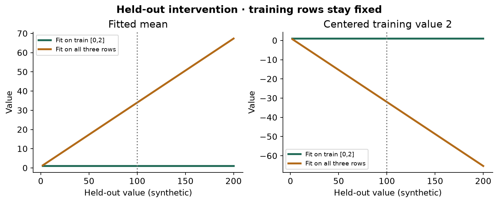
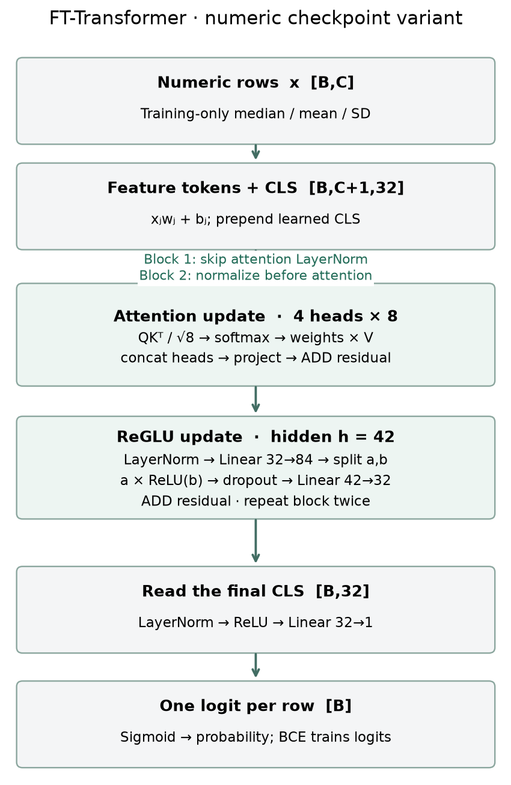
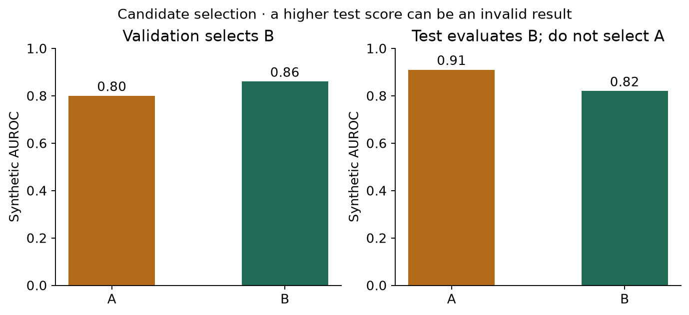
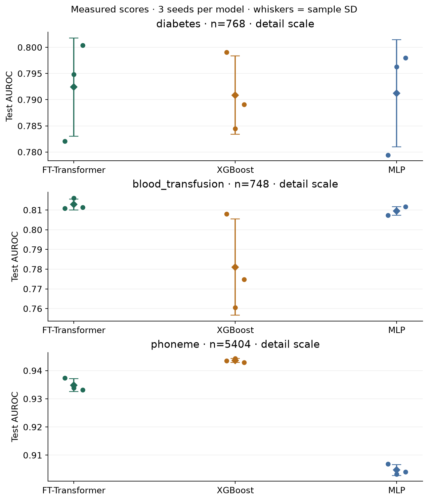
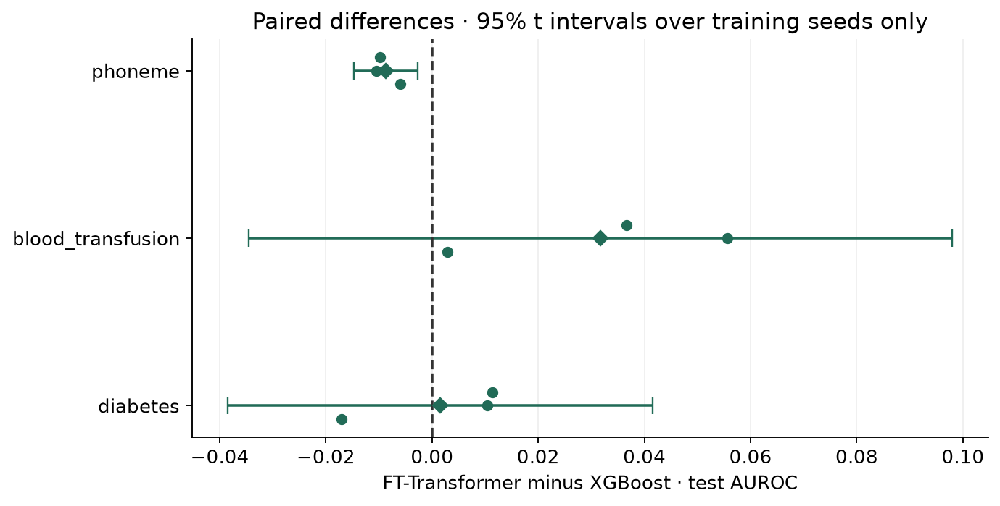

Year 2 · Quarter 1 · Checkpoint 050
FT-Transformer versus XGBoost
One protocol. Three datasets. A conclusion you can defend.
Your win: produce a reproducible model comparison and explain precisely what its outcome licenses. The checkpoint integrates the quarter’s architectures with the protocol audit from L049.
← L049: audit the claim · Checkpoint reference · Prepared notebook
Recall before reading
1. Specify the decision before fitting anything
You have learned several ways to turn a row into a prediction: tree ensembles, ordinary neural layers, attention over features, attention across rows, and explicit products. The research question now changes from “how does this block work?” to “what evidence would justify choosing it?” For our relational-learning mission, this is a prerequisite: an apparent gain from relationships is not persuasive if the single-table alternative was weak or evaluated differently.
The experimental unit is the object that supplies a distinct comparison. Here we compare model families within each dataset, so the dataset is the unit for the across-task rank summary. A random seed repeats training on that dataset; it does not create another dataset.
Our question is concrete: under the declared numeric preprocessing and two-candidate validation search, how do a from-scratch FT-Transformer and XGBoost compare on diabetes, blood transfusion and phoneme? An MLP supplies a simple neural baseline and a third arm for the Friedman procedure. These three real OpenML tasks are affordable substitutes, not the paper’s benchmark. Their selection favors small numeric binary problems. Neither categorical tables nor relational prediction is tested.
Primary reading: Gorishniy et al., §4.5, then Appendix D.2. The paper compares deep models in Table 2; its neural-versus-GBDT comparison in Table 4 uses ensembles. Here each seed produces one selected fitted model. Mean performance across seeds is not ensemble performance: an ensemble averages predictions first, then evaluates that combined predictor.
2. “Same protocol” is an information boundary
A training set estimates preprocessing parameters and model weights. A validation set selects candidates and stopping points. A test set measures the already selected procedure. Our split is stratified 60/20/20, using split seed 50 for both partition calls. Stratification approximately preserves class proportions. Exact row IDs are saved, so another reader need not infer the partition from its seed alone.
For numeric feature j, fit its median on training rows and use it to replace missing values. Then calculate the training mean μⱼ and population standard deviation σⱼ. Transform every partition using zⱼ=(xⱼ−μⱼ)/σⱼ; replace a zero σⱼ with one. An entirely missing training feature triggers an error requiring an explicit policy. The arrays have shape [B,C]: B rows and C numeric columns. The test set receives the transformation; it cannot estimate it.
Worked example: training values [0,2] have mean 1. Centering 2 gives 1. Add a held-out observation 100: fitting the mean on all three gives 34, so the same training value becomes −32. Nothing about the training observations changed; the held-out feature value changed their representation. No labels were necessary for this contamination. Its existence does not imply that every metric must improve.
Predict: move the held-out value to 200. Which mean is allowed to move?

The L046 verification harness used full-frame preprocessing before splitting. L050 does not reuse that data preparation. It also uses a different model implementation and different tasks; its scores must not be interpreted as a controlled before/after estimate of that earlier issue.
All three arms receive the same standardized numeric arrays. This keeps this checkpoint’s information and representation fixed. It is a disclosed choice, not a universal definition of fairness: a production comparison can legitimately allow each family its own training-only preprocessing. The paper uses neural quantile preprocessing and untransformed GBDT inputs (Appendix B.2).
3. Model architecture — audit the FT-T variant
This is a review of FT-Transformer, with a more faithful numeric path than L046’s GELU teaching variant. A scalar xⱼ becomes a learned vector xⱼwⱼ+bⱼ, where wⱼ and bⱼ each have d coordinates. Stack C vectors and prepend the learned classification token, CLS, to obtain [B,C+1,d]. CLS begins independent of the input and collects row information through attention.

Within a head, learned query, key and value maps produce Q, K and V. The weight matrix is softmax(QKᵀ/√dₕ), where dₕ=d/heads. Softmax exponentiates and normalizes each receiver’s scores across senders. Multiplying by V forms weighted sums. Concatenate heads, project back to width d, and add the incoming tokens: this is a residual connection. Attention weight dropout is 0.1 during training; evaluation disables it.
Next comes a featurewise feed-forward update. Layer normalization rescales coordinates within a token and learns a scale and offset. A linear map produces 2h coordinates, split into a and b; ReGLU returns a⊙max(b,0), with h=floor(4d/3). The symbol ⊙ denotes coordinatewise multiplication. For a=[2,−1] and b=[3,−4], the result is [6,0]. Dropout 0.1 and a second linear map return to d coordinates; add the residual. Skip the first attention normalization, but retain later attention normalizations and every FFN normalization. Paper Appendix E.
After the blocks, select CLS: [B,d]. LayerNorm → ReLU → linear d→1 gives one logit, an unrestricted score per row. Sigmoid converts it into a probability; binary cross-entropy trains directly from logits. XGBoost instead adds decision trees to improve a loss; its tree count and depth play different roles from neural epochs and width. The MLP is two linear/ReLU/dropout hidden layers of width 64 followed by one logit.
The copied-weight check compares our complete numeric path to rtdl_revisiting_models 0.0.2 in double precision, including input gradients. We retain all queries in the last layer; the reference computes only the final CLS query, which yields the same readout in the checked evaluation path. This is model-function evidence, not full training parity. It does not validate categorical embeddings, stochastic dropout alignment, the original training environment or benchmark results. Reference implementation.
4. Let validation select; let test evaluate
A hyperparameter is a configuration chosen outside weight optimization. Each model family receives exactly two declared candidates per training seed. FT-T and MLP try learning rates 0.001 and 0.0003. XGBoost tries maximum depths 3 and 6 at learning rate 0.05. This is a small fixed search, not comprehensive tuning. Reusing seeds 0,1,2 pairs each family’s run by index; it does not make their random operations equivalent.
Neural candidates train at most 35 epochs, in batches up to 256 rows, with AdamW. An epoch visits the training rows once. Restore the checkpoint with highest validation AUROC; stop after eight epochs without improvement. XGBoost trains at most 160 trees and stops after 20 rounds without validation improvement; its sklearn prediction interface uses the selected best iteration. Exact validation ties choose the earlier checkpoint or first candidate. See XGBoost early-stopping documentation.
AUROC measures how well scores rank positives above negatives across thresholds. A random ordering has expected AUROC 0.5; 1 means perfect ranking on the evaluated rows. It does not measure calibration or fix a deployment threshold. Selection uses validation AUROC for every arm. Only after choosing the candidate do we produce that arm’s test probabilities. No rejected candidate gets a test score in the actual experiment.
For synthetic candidates A and B, validation AUROC is [0.80,0.86] while test AUROC is [0.91,0.82]. Candidate B must win selection. Reading the test column to choose A turns it into another validation set. Predict: why does the reported number rise when the procedure becomes less trustworthy?

Equal trials do not mean equal compute. Two transformer fits can cost more than two tree fits, and two handpicked points cover different fractions of each family’s useful search space. Record training time and distinguish “best under this candidate count” from “best within 15 minutes.” Comparing those policies would be a new experiment with its own frozen rules. The paper’s Appendix D.2 studies time budgets explicitly.
5. Pair the differences; count the datasets
For one task, let aₛ and bₛ be FT-T and XGBoost test AUROC for seed s. Calculate δₛ=aₛ−bₛ before summarizing. The paired mean δ̄ is the average of these differences. Its sample standard deviation is sδ=√[Σ(δₛ−δ̄)²/(S−1)], where S=3 is the number of training seeds. Dividing by S−1 gives sample SD, not the population SD used earlier to scale inputs.
A conventional 95% t interval for the conditional seed mean is δ̄ ± t₀.₉₇₅,S−1 sδ/√S. For three seeds the multiplier is about 4.303, which warns how little precision three runs provide. The t model assumes suitably independent, approximately normal seed differences. With S=3 that assumption cannot be assessed well. These intervals describe initialization, minibatch and stochastic fitting variability on one fixed split and selected search procedure. They do not include alternative test samples, new hospitals, future periods or new datasets.
Worked example: FT-T scores [0.80,0.82,0.84] and tree scores [0.79,0.81,0.83] give paired differences [0.01,0.01,0.01]. Each model’s scores vary, but the paired difference does not. Overlapping separate error bars would miss this structure. A zero-width seed interval still says nothing about uncertainty over a new test population.
Next average each model’s seed scores within each task. Rank those means from best (rank 1) to worst, sharing ranks for exact ties. Average those ranks across the three tasks. A rank treats a 0.001 margin and a 0.10 margin alike, so retain actual differences beside it. Averaging ranks avoids making a high-score or large-row-count task silently dominate, but it also discards effect size.
The Friedman test checks whether three or more models’ ranks differ systematically across datasets. The Nemenyi critical difference is a threshold for differences between average ranks, CD=qα√[k(k+1)/(6N)], with k models and N datasets. Here k=N=3 and qα≈2.344, giving CD≈1.914. This small-N asymptotic procedure is a teaching diagnostic, not strong confirmatory evidence. Do not count nine seed fits as nine datasets. Demšar (2006).
For the primary two-family comparison, also report the exact two-sided sign test over non-tied dataset means. Even a 3–0 sweep yields p=2×(1/2)³=0.25 under equally likely independent win directions. That makes the sample-size limitation tangible. The convenience sample also limits the population being generalized to. Neither test’s failure to reject proves equality. Equivalence would require a predeclared practically negligible margin and an appropriate design with sufficient precision.
6. Read the author’s measured evidence
Held fixed: dataset rows, split IDs, transformed inputs, selection metric, two candidate counts and seed IDs. Varied: model family and its declared candidate settings. Measured: selected models’ test AUROC, per-seed differences, ranks and fit time. The purpose is to compare specified procedures, not isolate attention as a causal mechanism.
| Task | FT-Transformer | XGBoost | MLP |
|---|---|---|---|
| diabetes | 0.7924 ± 0.0094 | 0.7909 ± 0.0075 | 0.7912 ± 0.0102 |
| blood_transfusion | 0.8128 ± 0.0028 | 0.7811 ± 0.0244 | 0.8095 ± 0.0022 |
| phoneme | 0.9348 ± 0.0023 | 0.9436 ± 0.0007 | 0.9047 ± 0.0019 |
FT-T leads on 2/3 tasks. Mean ranks: FT-Transformer 1.333, XGBoost 2.333, MLP 2.333. Friedman χ²=2.000, p=0.368; Nemenyi CD=1.914. Exact two-sided sign-test p=1.000. The rank test detects no overall difference; equivalence is not established.
FT-T minus XGBoost mean AUROC and conditional 95% t intervals: diabetes: +0.0015 [-0.0384, +0.0415]; blood_transfusion: +0.0317 [-0.0345, +0.0980]; phoneme: -0.0087 [-0.0147, -0.0028]. On phoneme the seed interval lies below zero; this remains conditional on the chosen split and search. Other intervals include zero.
The author run took 91.1 seconds on CPU with numerical thread limits. Training time excludes lesson work. The copied-weight logit and input-gradient maximum errors were both 0.0e+00 in the specified reference check.


Use the table to distinguish a task-level difference from an across-task trend. Read each interval’s scope before using it as evidence. Even a consistently lower local score cannot refute a tuned ensemble result on another suite. Conversely, a published result cannot rescue a model that fails your deployment-specific comparison.
Full audit artifact includes data hashes, original row IDs, splits, preprocessing parameters, all validation histories, candidate choices, test labels/probabilities, precise scores, software versions and model-source hash. You can recompute AUROC from saved predictions and verify that every chosen candidate maximized validation performance.
7. Required next step — move toward the paper’s result
The three-task checkpoint does not use paper benchmark datasets. The separate scale-up uses Higgs Small, the 98,050-row, 28-feature numeric task used by Gorishniy et al. This is distinct from demanding the original multi-million-row Higgs dataset. Table 2 reports FT-T accuracy 0.729; Table 4’s ensemble comparison is a separate target. Sources: dataset table and Table 2.
Our closer run takes 6,000 rows without consulting labels, widens FT-T to 64 coordinates and three blocks, and increases the caps to 50 epochs and 400 trees. It retains the same visible implementation and three training seeds. The paper resource preset uses all 98,050 rows, d=192, three blocks, 100 epochs and 2,000 trees. Its name describes scale, not protocol fidelity: it still does not reconstruct the original splits, quantile transform, search or repetition scheme.
Measured closer attempt: Higgs Small accuracy (mean ± sample SD): FT-Transformer 0.6831 ± 0.0039; XGBoost 0.6847 ± 0.0021; MLP 0.6483 ± 0.0055. CPU fitting took 1814 seconds. INCOMPARABLE to Table 2 because the split, preprocessing, budget and selection differ. The full resource preset and Table 4 ensemble suite remain NOT_RUN. Scale-up ledger.
Missing paper coverage: California Housing, Adult, Helena, Jannis, ALOI, Epsilon, Year, Covertype, Yahoo and Microsoft; regression, multiclass and categorical branches; tuned ensembles and the full statistical population. A coincidentally close Higgs accuracy is not a MATCH. The supplied ±0.01 target tolerance only becomes meaningful once the protocol matches.
Run python labs/_paper_repro_l050.py --preset closer --out labs/data/cache/l050-your-run from the repository root, or use the notebook’s gated GPU cell. For an unattended T4 run use modal run --detach modal/l050_paper_repro.py --preset closer. Completed seeds resume from disk; changed source/data/configuration rejects cache reuse. Checkpoints are per completed seed, so an interrupted seed restarts. Reproduction contract · Modal operator.
8. Lab and checkpoint exit
Download the student notebook · Read prepared HTML · Open in Colab after this change is published.
The notebook teaches independently: implement training-only preprocessing, ReGLU, validation selection and paired uncertainty. Read the complete numeric model and trainer. Run all three datasets with the visible model and your functions, inspect live tables, then export your conclusion. The teacher solution is executed separately; its reference figures are clearly distinguished from your kernel’s results.
EXIT: supply (1) passing CHECK output, (2) the three-task score table and paired differences, (3) the rank summary with N=3, (4) a 120–180-word claim audit identifying dataset population, budget, uncertainty unit and paper mismatch, and (5) the larger-run ledger or an explicit NOT_RUN with the supplied next command. Include one specific follow-up experiment whose protocol you would freeze before seeing its results. The checkpoint is passed on defensible reasoning and implementation, not on FT-T winning.
Scoring: correctness, leakage discipline, conceptual explanation, independent implementation effort and reproduction audit each receive 0–2 points. A notebook that runs but selects on test fails the leakage criterion. A rigorously explained INCOMPARABLE result can earn full reproduction-audit credit. Your L049 completion is recorded as self-reported; no mastery score is inferred without EXIT evidence.
Ask me follow-up questions about any equation, implementation detail or result. Paste your EXIT artifact and explanation for a scored review. Tomorrow, reconstruct the train/validation/test boundary and explain why three seeds do not create three new datasets before rereading.